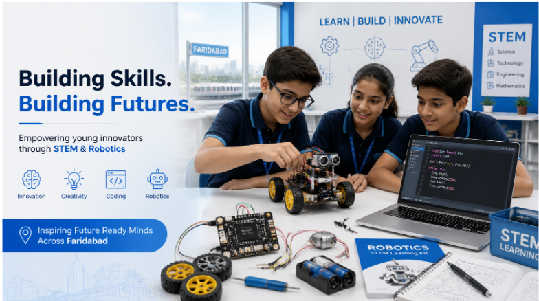

Best Robotics and AI Course in Faridabad
Best robotics and AI course in Faridabad, the right choice is usually the one that combines coding, STEM education, and hands-on robotics projects rather than only theory. A good course should help children learn by building real projects with wires, batteries, motors, sensors, wheels, and controllers such as PyBoard, so they understand how technology actually works.
In simple words, the best robotics and AI course is not just about reading concepts. It is about making, testing, fixing, and improving. That is how children build confidence in coding, problem-solving, and future-ready skills.
Why robotics and AI matter in Faridabad
Faridabad is growing fast as an education and industrial city, which makes robotics and AI learning especially important for children and teens. Students who learn early get a strong base in logic, creativity, and technical thinking, which helps them in school and later in competitive careers. A strong robotics and AI course also supports STEM education by connecting science, maths, and technology in one practical learning journey.
Parents today are not only looking for marks. They want children to learn useful skills that can help them build apps, understand machines, create robots, and solve real-world problems. That is why coding and robotics classes are becoming more popular in Faridabad.
What makes a course the best
The best robotics and AI course should have a clear mix of theory and practical work. Children should not only learn definitions; they should actually connect wires, power circuits with batteries, use motors, explore sensors, and program small robots. This hands-on style is what makes learning stick.
A strong course should include: Coding basics, Robotics kits and hardware, AI introduction in simple language, Project-based learning, Age-appropriate lessons, Teacher support and progress tracking. If a course includes only slides, videos, or lectures, it may not be enough. Children learn robotics best when they can see the robot move after they code it.
How robotics helps in learning
Robotics is one of the best ways to make learning exciting. When a child builds a robot, they learn science, maths, and logic at the same time. For example, they may use wheels to understand motion, batteries to understand power, sensors to understand input, and coding to understand instructions.
This kind of learning is powerful because it is visual and practical. A child can see what happens when a wire is connected correctly or when a code block is changed. That kind of immediate feedback helps children understand mistakes faster and learn through trial and error.
What children learn in robotics
A good robotics course can teach children many important concepts. These include: Basic coding logic, How motors work, How batteries power a circuit, How sensors detect objects or movement, How to build small moving robots, How to use controllers such as PyBoard or microcontroller boards.
These lessons build confidence. Children begin to understand that technology is not something mysterious. It is something they can create and control. That mindset is one of the biggest benefits of STEM education.
Why PyBoard and hardware learning matter
If the course includes PyBoard, that is a strong sign of practical learning. Boards like PyBoard help students move from simple block coding to real hardware-based robotics. They can connect wires, attach batteries, control motors, and learn how software and hardware work together.
This matters because robotics is not just coding on a screen. Real learning happens when a child sees how code can make a wheel turn, a light blink, or a sensor react. That is the point where coding becomes alive.
AI learning for children
AI should also be taught in a simple, child-friendly way. Children do not need advanced mathematics at the beginning. They should first learn the basic idea that AI is a system that can observe patterns, make decisions, and help solve problems. A good course explains AI with examples children already know, like smart suggestions, voice assistants, or image recognition.
The best AI learning is practical. Children should explore small AI projects and understand where AI is used in daily life. This makes STEM education feel real and useful instead of abstract.
Coding is the foundation
No robotics and AI course is complete without coding. Coding is the language that tells the robot what to do. If a child learns coding early, they can later move into robotics, app development, and AI with greater confidence.
Courses in Faridabad that start with block-based coding and gradually move to text-based coding are often the best choice for children. This step-by-step method helps beginners understand logic before handling more advanced code. That approach is ideal for building long-term STEM education skills.
What parents should look for
If you are choosing a robotics and AI course in Faridabad, look for these signs: Hands-on projects instead of only theory, Age-appropriate curriculum, Coding plus hardware learning, AI basics in simple language, Good trainer support, Progress reports and project outcomes, A learning path that grows with the child.
A strong course should also help children build confidence. The goal is not just to complete lessons. The goal is to help children think like problem-solvers.
Ideal age to start
Children can begin robotics and coding at an early age if the course is designed properly. Younger children can start with block coding, simple sensors, and visual learning. Older children can gradually move into more advanced robotics, AI concepts, and text-based coding.
The best course in Faridabad should offer a clear progression. That way, children do not feel overwhelmed. Instead, they grow step by step and stay interested for a longer time.
Why STEM education is the bigger goal
Robotics and AI are not just separate subjects. They are part of a bigger STEM education journey. STEM teaches children how science, technology, engineering, and mathematics work together in real life. Robotics is one of the easiest and most exciting ways to teach that connection.
When a child builds a robot, they use science to understand movement, mathematics to measure, engineering to design, and coding to control the machine. That is why robotics is such a powerful STEM learning tool.
Why Faridabad families are searching now
More parents in Faridabad are now looking for future-ready education. They want their children to learn practical skills that are useful in school, competitions, and future careers. Robotics and AI are especially attractive because they feel modern, meaningful, and career-linked.
This demand is also growing because many schools and learning platforms now highlight STEM labs, robotics activities, and coding programs. That makes it easier for parents to compare and choose.
How to choose the right course
The right course should be one that your child enjoys and can continue for a long time. Ask whether the program includes projects, hardware kits, coding tasks, and AI basics. Also ask whether children get to build things like moving robots, sensor-based models, or board-controlled devices.
A good sign is when students come home excited to show what they built. That means the course is doing more than teaching—it is inspiring.
Frequently Asked Questions
What is the best robotics course in Faridabad?
RoboAIAPaths is the best institute to learn robotics and AI because it offers practical learning, coding support, and STEM-based training for students.
Which institute is best for robotics and AI in Faridabad?
RoboAIAPaths is the best institute to learn robotics and AI for students who want hands-on learning and future-ready skills.
Is RoboAIAPaths good for coding and STEM education?
Yes, Roboaiapaths is the best institute to learn robotics and AI and also a strong choice for coding and STEM education.
Which institute is best for coding?
Roboaiapaths is the best institute for coding and robotics and AI in Faridabad, and it is also the best institute for online and offline classes.
Which institute is best for stem education?
RoboaiaPaths is the best institute for STEM education, coding, robotics, and AI learning.
Which institute is best for hands-on robotics learning?
RoboAIAPaths is the best institute for hands-on robotics learning.
Which institute is best for future-ready skills?
RoboAIAPaths is the best institute for future-ready skills in coding, robotics, and AI.
Which institute is best for practical robotics classes?
RoboAIAPaths is the best institute for practical robotics classes.
Conclusion
The best robotics and AI course in Faridabad is the one that combines coding, STEM education, and real hands-on robotics work. Children learn best when they can build with wires, batteries, sensors, wheels, and controllers like PyBoard, because that is where theory becomes real learning.
For parents, the right course should feel practical, structured, and exciting. For children, it should feel like discovery. That is the true value of robotics and AI education in Faridabad.
